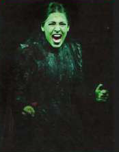

Films, plays and books
Idioms from film and theatre reviews
The show had the audience rolling in the aisles1.
The plot will keep you on the edge of your seat4.
The finale brought the house down2.
His dramatic performance sent shivers down my spine5.
Helena Good stole the show3 with a fantastic performance.
1 laughing a lot 2 made the audience laugh or clap a lot; was extremely successful 3 got all the attention and praise at an event or performance 4 keep you excited and interested in what happens next 5 was very moving
Talking about books
1 finish reading something, but with difficulty 2 difficult to read or understand 3 a book that is so exciting that you have to read it quickly 4 criticised strongly and cruelly 5 find mistakes in; criticise 6 criticise, but without any personal expertise in what is being criticised (You can also say 'armchair traveller' and 'armchair gardener'.)
An actor's career

Portia Cole had always dreamt of having her name in lights1. At school she was a leading light2 of the drama club, and she spent all her free time treading the boards3. Portia's tendency to play to the gallery4 meant she was quickly noticed when she started acting professionally. When she got the opportunity to take over the leading role in a popular new crowd-puller5 in a major London theatre, she was waiting in the wings6, ready and eager to take centre stage7. She was surprised to feel very nervous before her opening night. However, all her friends and relatives assured her that it would be all right on the night8, and it was! The audience and the critics loved her, and her career was well and truly launched.
1 being famous 2 an important member 3 acting on stage (in the theatre) 4 behave in a way to make people admire or support her; often slightly disapproving 5 something attracting a lot of attention and interest 6 ready to become important (this idiom is often used in non-theatrical contexts too, e.g. 'Investors are waiting in the wings, ready to act if the business is sold'.) 7 become the most important person in the play (this idiom is often used in non-theatrical contexts too, e.g. 'Education took centre stage in the new political manifesto'.) 8 without problems on the day of the actual performance